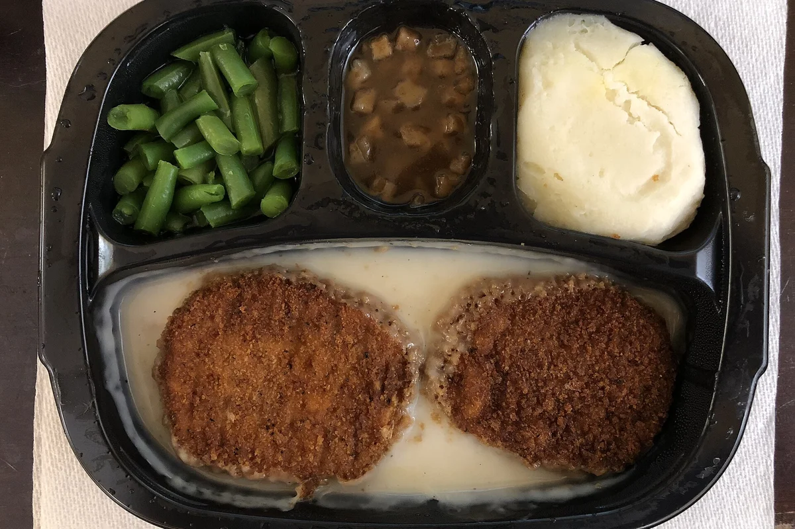
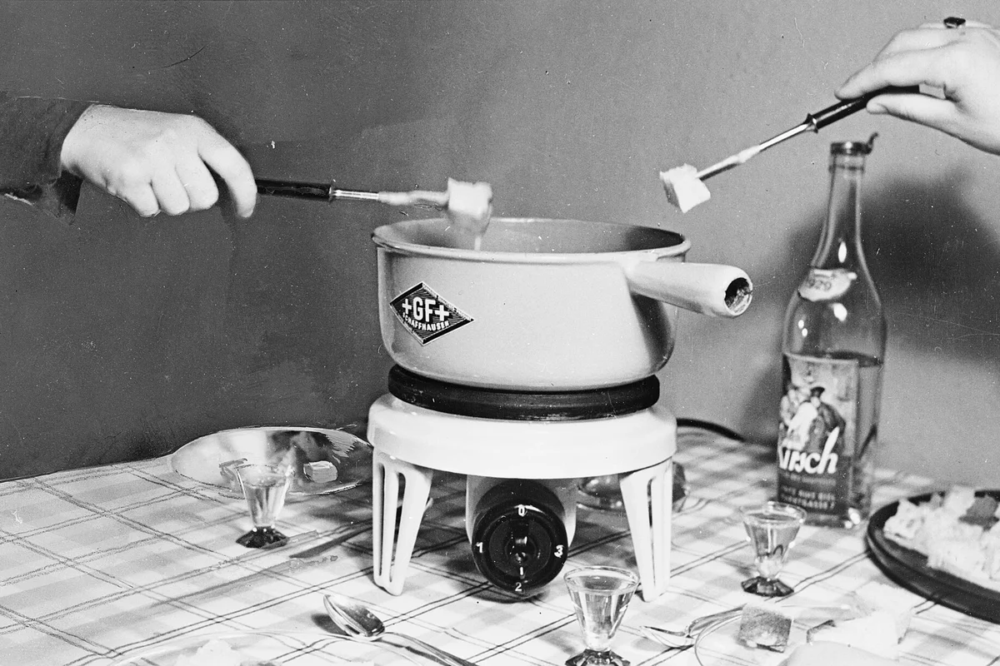
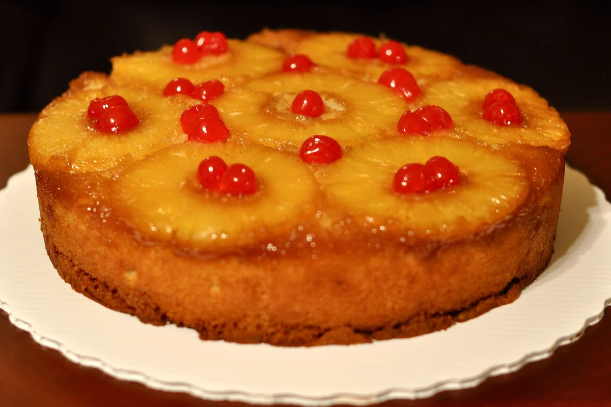

FOOD & FAMILY
When Jell-O Was a Salad and Dinner Came in a Tray
A wobbling mold, a little foil compartment, a cake turned upside down. Which of these dishes takes you straight back to your family's table?

Picture an American kitchen in the 1960s or '70s. There might be a gelatin mold chilling in the refrigerator, or a frozen dinner waiting for the oven. Perhaps the fondue pot has come out for company.
Every household had its own menu. But certain dishes can bring a whole room back into focus. Some have slipped out of everyday rotation; others still turn up at holidays or in a favorite family recipe. You may remember the person who served one before you remember the taste.
The salad that gave a little wobble
The Jell-O mold could arrive looking almost too pretty to disturb: a bright ring, a scalloped edge, pieces of fruit suspended inside. Then someone set the plate down, and the whole thing trembled.
Sweet and savory gelatin salads both had their place in mid-century recipe books. The 1963 Joys of Jell-O even offered a dish called Ring-Around-the-Tuna. Your family's version may have been a good deal sweeter.
Perhaps you loved it. Perhaps you carefully ate around something inside. Either way, you may still picture the serving dish, and the person who knew how to turn that mold out in one piece.
Maybe you first noticed the color as the dish was carried across the room. There might have been a moment of careful balancing before a space was found among the other plates. If you were a child, perhaps you leaned forward for a closer look, wondering which part would land on your plate.
You may remember a spoon being handed over, or someone explaining what was inside. The same dish could bring a smile from one person and a polite hesitation from another. Was there a relative who always took a generous helping? Or someone who insisted that their own version was a little different?
There is room in the memory for all of those reactions. You don't have to wish for another serving to feel fond of the scene. Perhaps what you would really like back is the sound of that person's voice saying, "Just try a little."
Dinner, with a place for everything
The old aluminum TV-dinner tray had its own little geography. Each part of the meal stayed in its compartment, separated by a shiny ridge. If you disliked your foods touching, that alone was something to appreciate.

"Hungry-Man Country Fried Chicken TV dinner" by Famartin, CC BY-SA 4.0, via Wikimedia Commons. License: https://creativecommons.org/licenses/by-sa/4.0/ Changes: cropped and resized from the original.
Those trays were designed to go from freezer to oven. By the 1960s, folding TV tables offered another place to eat, with the evening's program for company.
Maybe a frozen dinner felt like a treat at your house. Maybe it meant the usual cook was getting a break. What comes back now may be less about the menu than the room: your seat, the television, and everyone settling in.
Can you picture the moment your meal was set in front of you? Perhaps you looked over each compartment before deciding where to begin. One part might disappear first, while another remained almost untouched. Even a supper with everything already portioned could be eaten in a very personal order.
Maybe you had a favorite place to sit, with just the right view of the screen. Perhaps a grown-up made sure everything was settled before sitting down, too. The evening could feel slightly different from an ordinary meal at the table, even if the program itself was one you watched often.
Not every family's memory will look alike. Your tray may belong to a quiet evening, or a rare night when the usual routine changed. Try remembering what happened after supper: who stayed to watch, who got up, and whether anybody was still talking about the show at bedtime.
The pot that made dinner a party
A fondue pot in the middle of the table changed the arrangement. Instead of passing a serving bowl, you reached toward the same pot, dipping a piece of bread into melted cheese.

"Fondue, 1939" - Konzernarchiv der Georg Fischer AG, Schaffhausen, CC BY-SA 4.0, via Wikimedia Commons. License: https://creativecommons.org/licenses/by-sa/4.0/ Changes: cropped and resized from the original.
Fondue parties caught on in America during the 1960s and '70s, and home pot-and-burner sets were part of the appeal. The equipment made an evening at home feel like an occasion.
You might remember watching the grown-ups from the doorway, or finally being old enough to join them. The pot may spend more time in a cupboard now. But bring it out, and someone is likely to remember exactly when your family got it.
Perhaps you studied the long forks before you were allowed to use one. You might have watched someone turn a piece of bread, waiting for it to stop dripping. There could be a small pause while everybody made room for another hand to reach toward the middle.
What did the rest of the table look like? Maybe there were bowls arranged within reach, or napkins folded more carefully than usual. Someone may have shifted a chair to sit closer. If you remember the occasion as a child, the grown-ups might have seemed unusually pleased with the whole arrangement.
The memory need not be a perfect dinner party. Perhaps something was dropped, or the conversation wandered while someone searched for another piece of bread. Those are the details you might laugh about together now. The pot gives you a starting point; the people around it supply the rest.
The cake with the little reveal
Pineapple upside-down cake saved its prettiest part for the moment the pan came off. Underneath were the pineapple rings, the glossy brown-sugar topping, and those red cherries tucked into the centers.

"Pineapple Upside Down Cake" by Kimberly Vardeman, CC BY 2.0, via Wikimedia Commons. License: https://creativecommons.org/licenses/by/2.0/ Changes: cropped and resized from the original.
The cake was already an American favorite long before the 1960s. If it appeared in your kitchen during those years, though, its history probably mattered less than whether you would get a piece with a cherry.
Perhaps yours came from a handwritten recipe. Perhaps someone used a mix and made it their own. A ring of pineapple can still bring that particular cake plate to mind, right down to the slice that never quite came out neatly.
Maybe you watched the plate being held against the pan and waited for the turn. Even knowing what was supposed to happen could make you curious to see the result. You may remember someone lifting the pan slowly, then looking to see whether everything had come away as planned.
Did the cake go straight to the table, or sit on the counter while the rest of the meal was cleared? Perhaps you walked past it more than once, checking that it was still there. You might have had a particular slice in mind long before anyone picked up the knife.
If someone still makes that cake in your family, ask whose version they follow. The answer may be a name, an old recipe card, or simply, "That's how I remember it." A dessert can travel from one kitchen to another without losing the person you associate with it.
Which dish belongs in your family's version of this story? Who made it, and who always asked for seconds? Share this with someone who sat at that table with you. They may remember the dish you forgot.
All stories · Explore the decades
← Back to the games · All articles · About · Privacy policy · Photo credits · Cookie settings